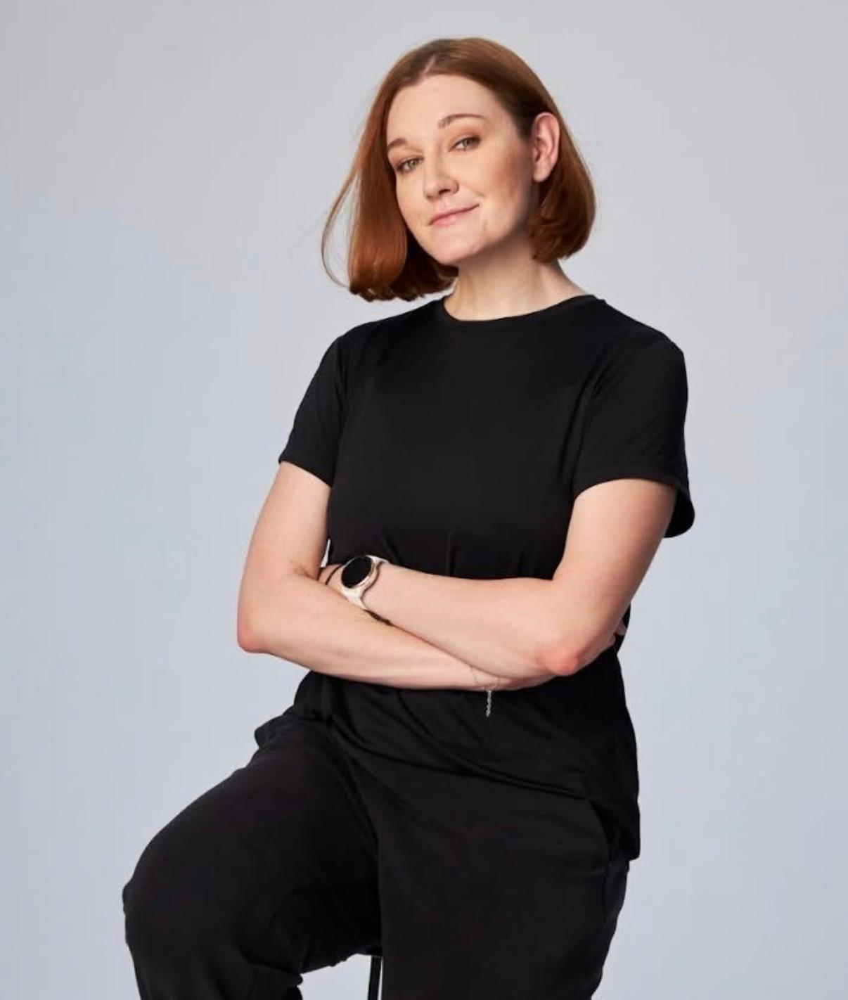

Restarted projects don't fail the way new projects do. New projects fail from too much ambition. Restarted projects fail from decay. The scope is a year stale, the people who wrote it are gone, and the client has already lost confidence once and is watching for a reason to lose it again.
houston, we have
A UK healthcare platform connecting carers, doctors, and nurses came off a nearly year-long pause. The previous project manager was gone. What remained: four developers, a designer, a vague and incomplete scope, a client with very limited availability, and client-side stakeholders with no hard decision-making power.
There was no business analyst. My company had no established AI workflows and was mid-migration between project management tools.
My job: deliver anyway.
Projects like this don't die from missing code. They die from missing information: requirements nobody wrote down, decisions nobody recorded, context that left the building with the last PM. With no BA on the team, every requirements gap was going to surface mid-development, the most expensive possible place to find it.
The standard answer is to work harder. Take better notes. Write specs at night. Chase the client. That approach fails predictably: one person cannot manually run the entire information layer of a five-person build and still manage delivery.
I'll be honest about the first weeks: I thought this project was going to fail no matter what I did. That feeling turned out to be useful. When you stop believing that effort alone will save a project, you stop working harder and start designing.
So I stopped treating documentation as overhead and started treating it as a system to design.
Stack: Claude Projects with connectors, Read.ai, Slack, Gmail. No engineering support, no extra budget, no extra time.
The selection criteria for what to automate were simple: repetitive, text-heavy, and expensive when dropped. Documentation and reporting scored highest, so they went first.
The first build was not a workflow but a knowledge base: the scope of work plus transcripts from every meeting type, dailies, refinements, client calls, and design walkthroughs. Without shared context, every automation is a demo, not a system.
Early dailies were dense, half standup, half refinement, often splitting into subgroups. Transcripts now become structured notes, who does what and what happens next, drafted directly into the Slack channel. I review and send. In a project with this much movement, things used to get lost weekly. Over 40 daily notes so far, nothing dropped.
Read.ai records the call, a draft summary email is waiting in Gmail before I've closed the meeting tab. 16 client status summaries to date. The follow-up stopped being a task hanging over the evening.
The designer walked the client through the system screen by screen. Those recorded sessions became raw material for functional specifications. The hard part was not generation but restraint: AI loves producing volume nobody reads, and it took many iterations to get essence instead of noise. The pipeline now flags assumptions, edge cases, and open questions automatically, so the client answers them at the requirements stage instead of mid-sprint. A spec that took hours to days now takes minutes to generate and 30 to 60 minutes to verify. 17 specifications since April.
For a component with no existing requirements at all, I fed the system every specification, the contract, and the client conversations, and had it propose the panel's feature set, marked by what fell inside or outside the contracted scope, prioritized P0 to P2. That output drove the client conversations and became the basis for the designer's clickable prototype.
The weekly board update in a fixed format used to take up to an hour, at 4 PM on a Friday. It now drafts itself from the daily notes channel and client summaries. I verify in about 15 minutes.
What stayed deliberately human: every decision, every client conversation, and the verification of every single output.
AI drafts. I sign.
While mapping order, visit, payment, and payout statuses into a single cross-level consistency table, the requirements pipeline surfaced a gap nobody had noticed: the specification made no distinction between a visit ending and a carer being paid.
As written, the backend would have released payouts the moment a visit finished. That eliminates the 48-hour window needed to catch a no-show or a dispute before money leaves the platform.
We introduced a separate Finished state (payout processing, 48-hour hold) versus Completed (payout paid), and confirmed In Progress exists only at the visit level, never at the order level, before any of it reached development.
A payout logic error, caught on paper. In production, the same error is a financial incident with real money and real carers on the other end.
And the outcomes that matter beyond my own desk:
Verification is the bottleneck nobody puts on LinkedIn. Generating a million pages takes minutes. Deciding which of them is true takes real time, and that work cannot be delegated to the tool that produced the draft.
The bigger shift: as AI compresses development time, the constraint moves upstream. The scarce skill is no longer producing output. It is knowing what to build, for whom, and what breaks if you get it wrong. Requirements work is becoming more valuable, not less.
The system described here was version one. I'm currently testing spec-driven development, where specifications drive work directly against real repositories. I'm more interested in what version two looks like.